Welcome to Paws & Love
Welcome to Happy Paws, an informative website designed to provide basic knowledge about pets and their care. Pets are loyal companions that play an important role in human life by offering comfort, happiness, and companionship.
This website includes information about various types of pets such as dogs, cats, birds, and fish.
It also explains proper feeding habits, health care practices, and the importance of responsible pet ownership.
The main objective of Paws & Love is to spread awareness about pet care and encourage people to treat animals with love, respect, and responsibility.
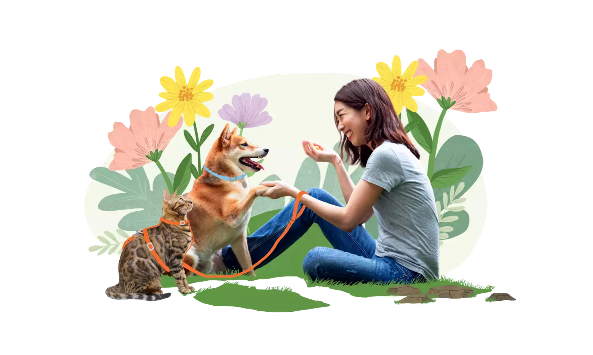
Gallery
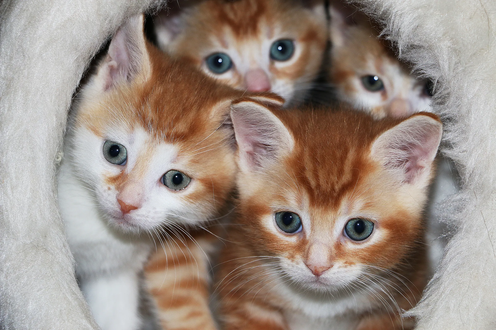
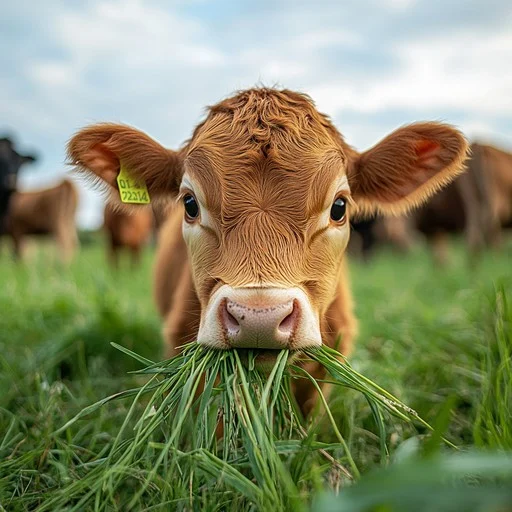
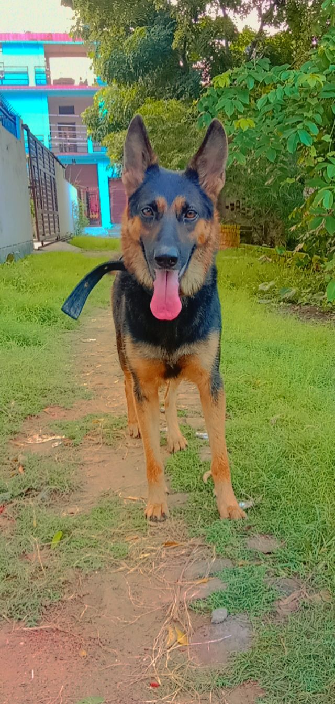
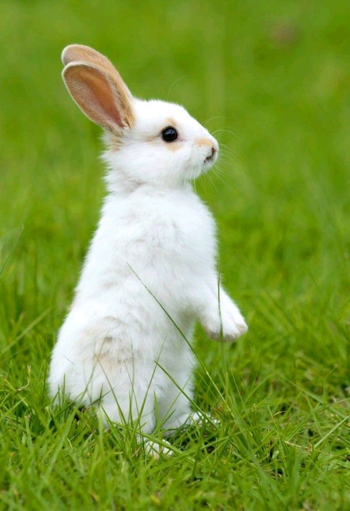


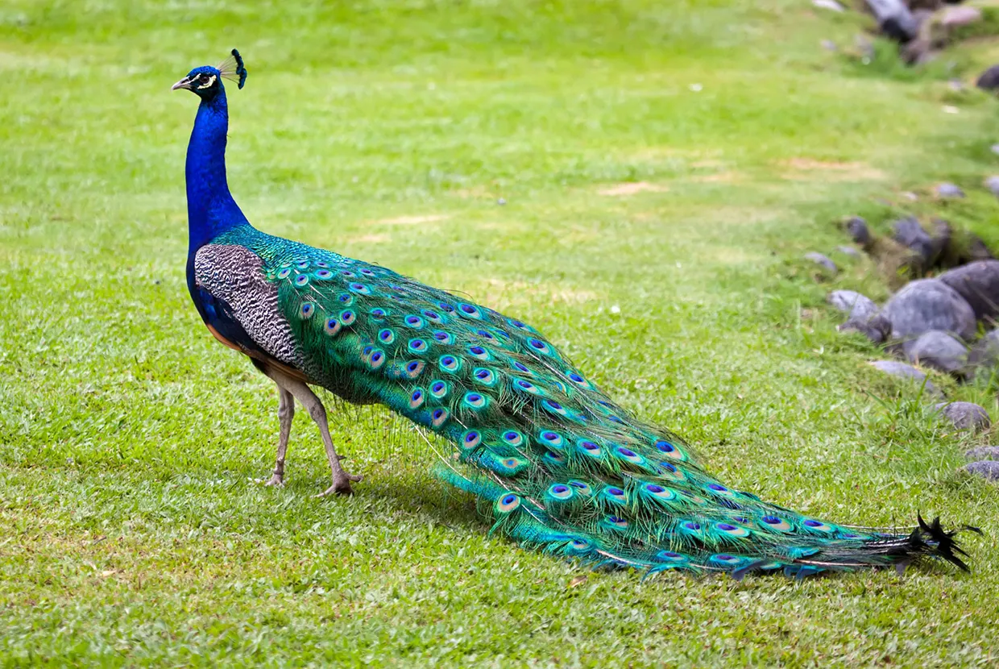
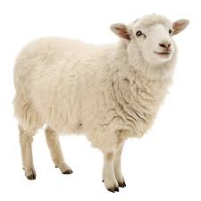
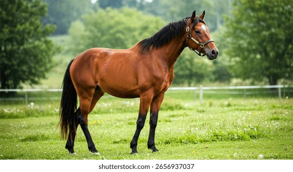
About Pets
Our Mission
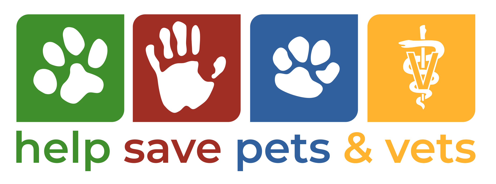
Paws & Love is dedicated to helping pets and the people who love them. We provide practical, caring advice about pet health, nutrition, training, and responsible ownership. Our mission is to promote the well‑being of companion animals through clear, trustworthy information and community support.
What We Offer
- Trusted Guides: Easy-to-follow articles on feeding, grooming, exercise, and common health concerns.
- Practical Tips: Everyday advice for training, socialization, and creating a safe home environment.
- Adoption Resources: Guidance on adopting responsibly and preparing your home for a new pet.
- Community Stories: Photos and stories from pet owners and volunteers.
How We Work
We combine simple, evidence-based guidance with real-world tips so beginners and experienced owners alike can make informed choices. We collaborate with local shelters, veterinarians, and volunteers to keep our resources current and practical.
Pet Rescue and Welfare
For more information about animal rescue and welfare, visitors can refer to trusted animal rescue organizations. These organizations work to protect and rescue abandoned and injured animals and provide them with proper care.
Click here to learn more about pet rescue and animal welfare
Get Involved
Support our mission by sharing our guides, volunteering with local shelters, or adopting responsibly. If you have a story, photo, or tip to share, please contact us — we love hearing from the community.
Food
Food for Pets
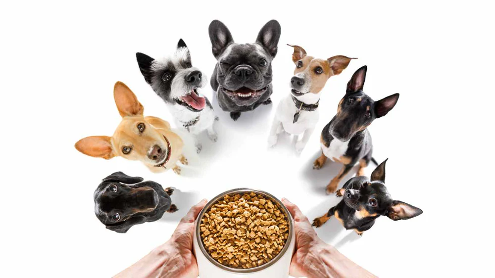
Proper food is essential for the healthy growth and well-being of pets. A balanced and nutritious diet helps pets remain active, strong, and free from diseases. Different pets require different types of food based on their nature and needs.
Food for Common Pets
Dogs
Dogs require a balanced diet that includes proteins, carbohydrates, and vitamins. They can be fed dog food, rice, vegetables, and cooked meat. Clean drinking water should always be available.
Cats
Cats need food rich in protein. They can be given cat food, fish, and meat. Milk should be given in limited quantity.
Birds
Pet birds feed on grains, seeds, fruits, and vegetables. Fresh water should be provided daily, and stale food should be removed regularly.
Fish
Fish require special fish food according to their type. Overfeeding should be avoided as it can pollute the water and affect the health of fish.
Do’s and Don’ts of Pet Food
Do’s
- Provide fresh and clean food
- Give clean drinking water regularly
- Feed pets at fixed times
Don’ts
- Do not give spoiled or leftover food
- Avoid giving junk food
- Do not overfeed pets
Conclusion
Providing proper and healthy food is an important responsibility of every pet owner. Good food helps pets live a healthy, happy, and long life.
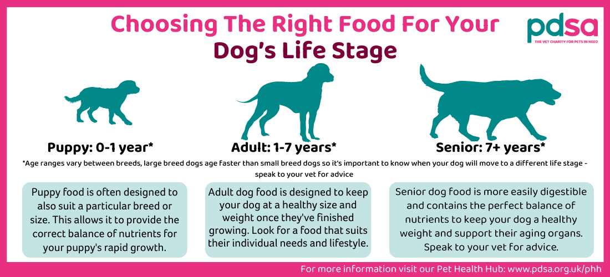